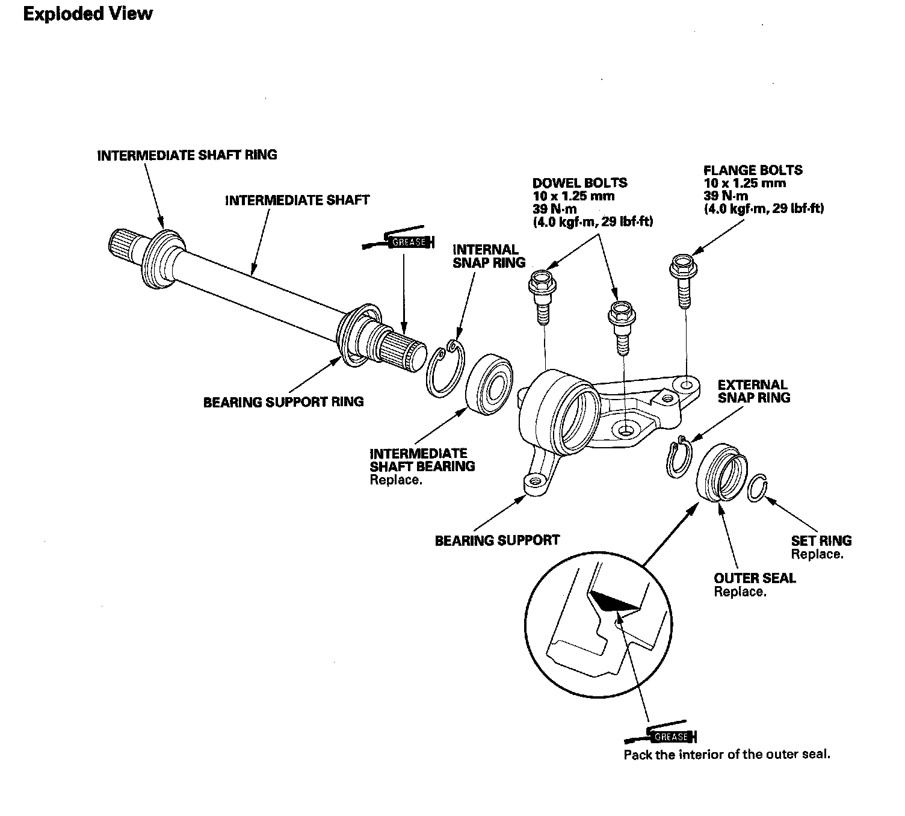
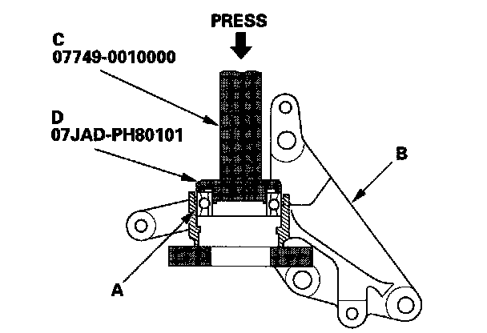
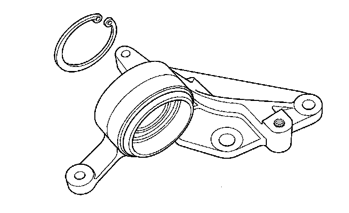
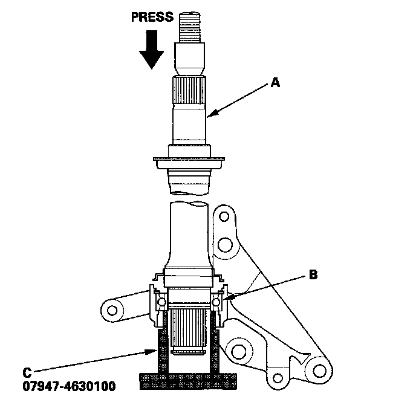
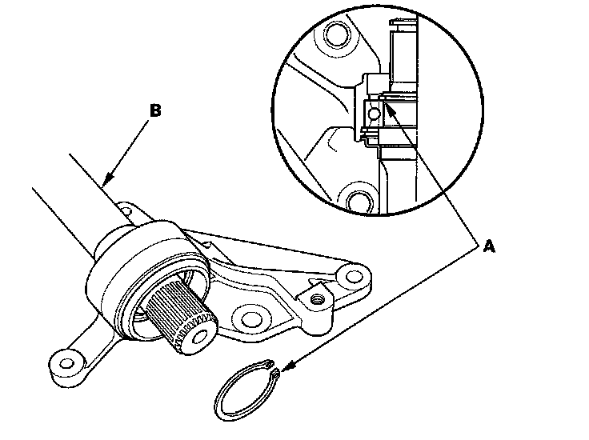
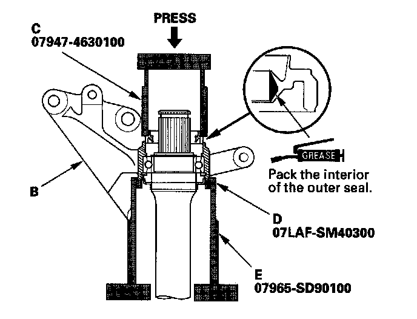
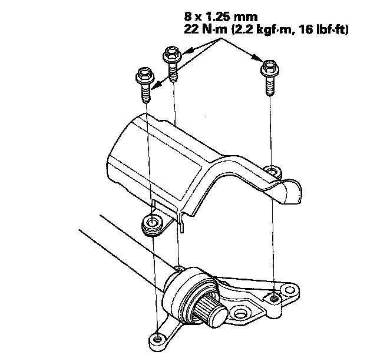
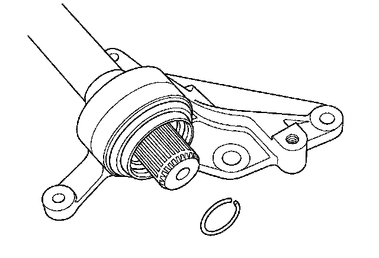

Intermediate Shaft Reassembly
Intermediate Shaft ReassemblyIntermediate Shaft:

Special Tools Required
^ Driver 07749-0010000
^ Support base attachment 07LAF-SM40300
^ Support base 07965-SD90100
^ Oil seal driver attachment 07JAD-PH80101
^ Fork seal driver, 39.2 x 49.5 x 15 mm 07947-4630100
NOTE: Refer to the Exploded View as needed during this procedure.
1. Clean the disassembled parts with solvent, and dry them with compressed air. Do not wash the rubber parts with solvent.
2. Press the intermediate shaft bearing (A) into the bearing support (B) using the driver (C) oil seal driver attachment (D) and a press.

3. Install, then seat the internal snap ring in the groove of the bearing support.

4. Press the intermediate shaft (A) into the shaft bearing (B) using the fork seal driver (C) and a press.

5. Install, then seat the external snap ring (A) in the groove of the intermediate shaft (B).

6. Install the outer seal (A) into the bearing support (B) using the fork seal driver (C) support base attachment (D) support base (E) and a press.

7. Install the heat shield onto the bearing support.

8. Install the set ring.
